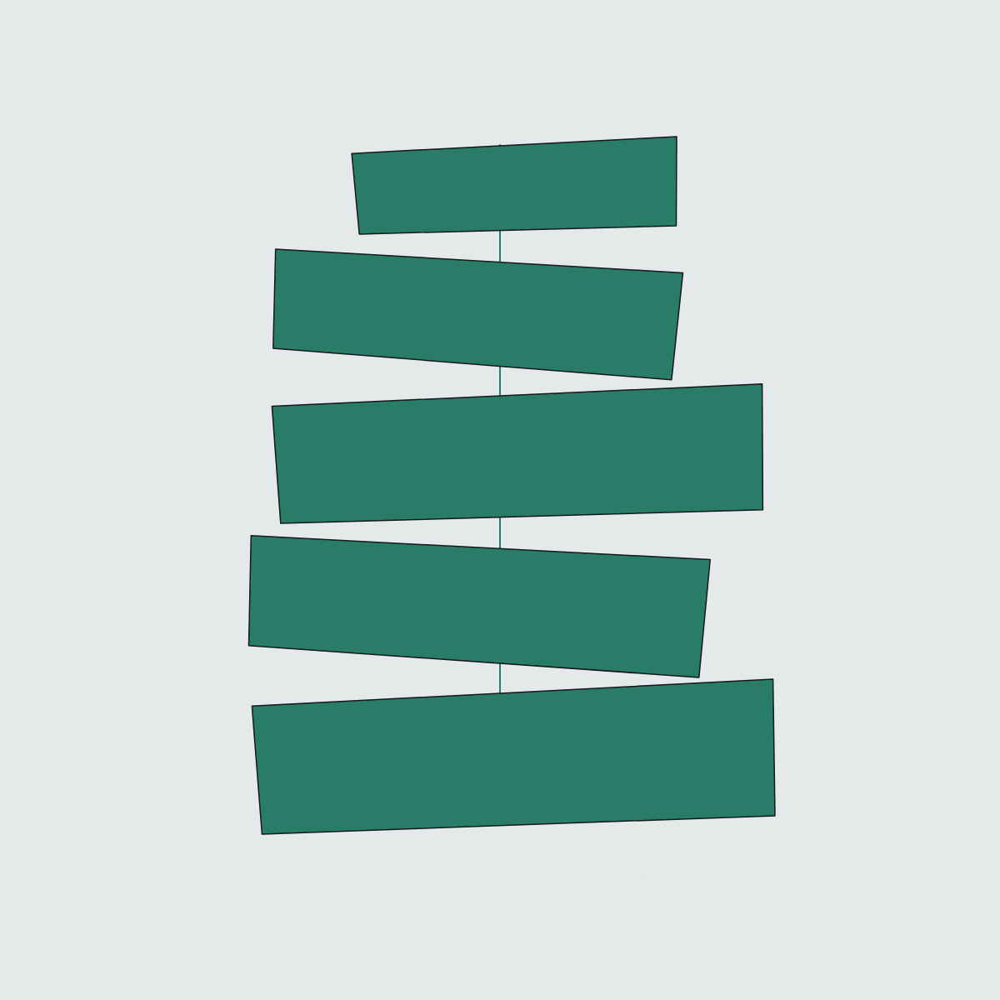

Artifact-native pipelines over coding-agent CLIs.
A small, declarative orchestrator for multi-phase agentic pipelines that delegate to Claude Code, Codex, Grok and more — as headless subprocesses. Every step leaves a validated artifact on disk. The trail of artifacts is the execution state. There is no database, no checkpointer, and no session to lose.
uv tool install cairn-pipelines

Where is this run, and is each step actually done?
That's the question you hit the moment a pipeline outgrows a single chat session. cairn's answer is the filesystem. Every step writes a typed artifact validated by JSON Schema plus optional Python checks; an append-only trail.jsonl records every event; resume is just walking the run directory to the last valid artifact and re-running from there. kill -9 at any moment costs you at most one step's work.
One authority — the validated filesystem. No second source of truth to drift.
A declarative trail the walker walks.
A pipeline is an ordered trail of nodes. cairn plan resolves params, expands conditionals, and statically verifies dataflow, schemas, agents and skills — before a single token is spent. Then the walker drives each node: for an agent step it renders a prompt envelope to a file, invokes one fresh executor subprocess, and marks the step done only if the artifacts it produced pass their validators. Every event is appended to trail.jsonl. cairn resume re-walks from the first step whose artifact no longer validates.
Four node shapes, three step actors — nothing else in the kernel.
One unit of delegation: an agent: process, a deterministic run: script, or a checkable manual: step. Same contract shape: needs / produces / validated.
A human decision as a first-class node; the choice is written to gates/<name>.json and consumed downstream like any artifact. Never re-asked on resume.
A concurrent group; children must have disjoint produces.
A bounded review⇄revise cycle, its exit read from artifact content (until: artifacts.art-review.verdict == 'approve').
Not a fifth shape — the three step actors: machine (run:), model (agent:), human (manual:, printed to the operator and validated on confirmation). One contract shape regardless of which.
Every run is one directory you can read.
One execution = one self-describing directory: the isolation boundary, the resume source of truth, and a complete post-mortem with no external service. The prompt is an artifact too — the exact rendered envelope is on disk next to the log.
runs/hello-world-20260703/ ├── run.json # pinned: params, dims, executor(s), resolved models, pipeline hash ├── trail.jsonl # append-only event log ├── greeting.json # a produced artifact (schema-validated) ├── message.txt # a produced artifact (validator-checked) ├── gates/ │ └── tone.json # the gate decision, stored as an artifact — replayable, never re-asked └── logs/ ├── greet.prompt.md # the EXACT rendered envelope — the prompt is an artifact too └── greet.log # step stdout/stderr
{"event":"run-start","run":"hello-world-20260703","pipeline":"hello"}
{"event":"step-done","step":"greet","artifacts":["greeting"],"ms":38}
{"event":"gate-answered","gate":"tone","choice":"friendly","by":"default"}
{"event":"step-done","step":"compose","artifacts":["message"],"ms":12}
{"event":"run-done","status":"ok"}
cairn trail <run-dir> reads this back as a status tree; --follow --json streams it as NDJSON. cairn ps gives a cross-run fleet view — no daemon.
If you can write the exact command, it's a run: step. If it needs judgment, it's an agent: step.
Both share one contract shape — needs, produces, validated the same way — and mix freely in one dependency graph. A run: step is deterministic and costs no tokens; an agent: step delegates the inside of the step to a model. Tools tend to graduate downward: a step enters agentic while you're still learning the right invocation, and once the trail shows the agent running essentially the same command every run, you demote it to run:.
- step: select-urls run: "uv run python skills/crawl4ai/scripts/discover_urls.py --select {gate:scope} --pages {params.pages} --out {artifact:selected-urls}" needs: [discovery] produces: [selected-urls]
- step: capture agent: site-extractor # skills:[crawl4ai], bash: allowlist.yaml#capture needs: [discovery, selected-urls] produces: [site-map, design-signals] timeout: 60m
Same needs/produces contract; same validation gate to "done". The only difference is what runs inside.
One abstract worker. Any CLI behind it.
A step names an abstract worker; the CLI that runs it is a swappable executor. Pipelines don't know which CLI runs them, and a mixed fleet spanning codex → claude → grok has run end-to-end. The first three coding agents are live-verified; the five newest are adapter-complete — their flag surfaces sourced from vendor docs and local --help probes and unit-tested against fake binaries — with a real-CLI smoke run still pending. The matrix says so.
| Executor | Runs | Status |
|---|---|---|
| shell | a deterministic command — how run: steps execute | Live — even determinism goes through the executor interface |
| stub | recorded envelopes replayed from fixtures | Live — powers offline pipeline tests through production code, zero tokens |
| claude | claude -p (Claude Code) | Live-verified — first real run captured as an offline stub regression |
| codex | codex exec | Live-verified |
| grok | grok --prompt-file | Live-verified — the mixed codex → claude → grok fleet ran here |
| cursor | agent -p (Cursor CLI) | Adapter-complete · smoke pending — uses cursor's own sandbox |
| opencode | opencode run | Adapter-complete · smoke pending — probed against opencode 1.17.15 |
| hermes | hermes -z (Nous Research) | Adapter-complete · smoke pending |
| kimi | kimi -p (Kimi Code / K3) | Adapter-complete · smoke pending |
| agy | agy -p (Antigravity / Gemini) | Adapter-complete · smoke pending · local-only — interactive OS-keyring auth, no CI path |
cursor/opencode/hermes/kimi/agy headless modes auto-approve with no native approval gate (cursor excepted — it ships its own sandbox), so opencode/hermes/kimi/agy run under cairn's OS filesystem sandbox (sandbox: fs) — the same containment claude gets. cairn doctor preflights each: auth, version, hook support.
Four real pipelines, not a hello-world.
These run in the repo today. Each mixes deterministic run: steps, agentic agent: steps, and human gate: nodes in one dependency graph.
A six-phase site rebuild — capture → audit → blueprint → build → review → deploy. A human gate scopes the capture; a concurrent pair writes the blueprint and the design system; a bounded loop runs art review until it approves; deploy is a deterministic run: step gated on the QA verdict. This is the origin pipeline cairn was distilled from (brease-factory).
steps: - step: discover agent: site-extractor produces: [discovery] - gate: scope # human decision, headless-safe via default reads: [discovery] ask: "Which pages should we capture?" options: { recommended: "nav-linked core pages", all: "everything", core: "home only" } default: all - step: select-urls # deterministic — no model needed run: "uv run python skills/crawl4ai/scripts/discover_urls.py --select {gate:scope} --out {artifact:selected-urls}" needs: [discovery] produces: [selected-urls] - parallel: blueprint # concurrent pair, disjoint produces steps: - step: architect agent: blueprint-architect produces: [blueprints] - step: design-author agent: design-director produces: [design-md] - loop: art-review # bounded review⇄revise, exit read from disk when: dims.design != 'reproduce' max: { interactive: 3, headless: 2 } until: artifacts.art-review.verdict == 'approve' body: - step: review agent: design-director produces: [art-review] executor: claude # judgment stays on the strongest reviewer - step: revise agent: frontend-builder produces: [frontend] - step: deploy # deterministic, gated on the QA verdict when: params.deploy == 'on' && artifacts.qa-report.verdict == 'GO' agent: deployer needs: [frontend, qa-report] produces: [deploy-report]
cairn improving its own workspace with the same contracts as any other work. A deterministic aggregate step freezes the ranked cairn learnings view; an agent curate step judges it into proposals.json; a human approve gate whose headless default is no means an unattended (cron) run records proposals and stops — it can never self-promote; the open-pr step applies approved edits on a new branch and opens a PR. Proposals arrive as branches/PRs, never as direct commits.
steps: - step: aggregate # deterministic, zero tokens run: 'cd "$CAIRN_WORKSPACE" && cairn learnings > "{artifact:learnings-snapshot}"' produces: [learnings-snapshot] - step: curate # judgment → an agent step agent: curator needs: [learnings-snapshot] produces: [proposals] - gate: approve # a HUMAN decides; headless default is "no" reads: [proposals] ask: "Promote these proposals into the workspace (new branch + PR)?" options: "yes": "Apply every proposal on a new branch and open a PR" "no": "Stop here — keep the proposals as a run record, change nothing" default: "no" - step: open-pr # deterministic: branch + PR, never a direct commit when: "gates.approve.choice == 'yes'" run: 'python3 "$CAIRN_WORKSPACE/scripts/self-improve-open-pr.py" "{artifact:proposals}" "{artifact:pr-record}"' needs: [proposals, approve] produces: [pr-record]
A pipeline that reacts to the outside world — with no daemon and no webhook server. An event is a file in a watched inbox: cairn trigger sync installs a launchd WatchPaths / systemd path-unit that fires cairn trigger run; each new file is claimed atomically (at-most-once, even under duplicate firings) and becomes one headless run with the file's path as a param. For providers you must poll, a cursor: on a run: step keeps a persistent watermark the kernel only advances after the step's artifacts validate — a failed poll never loses events. Webhooks stay outside the kernel: a documented bridge verifies the signature and drops the payload into the inbox.
# triggers.yaml — the push half: one run per file dropped in the inbox handle-reply: pipeline: handle-reply # checked against pipelines/ at parse time watch: inbox/replies/ # claimed → run → .done/ (failed → .failed/) param: event # the claimed file's path, as --param event=… glob: "*.json" # pipelines/poll-events.yaml — the pull half: scheduled poll with a kernel-managed cursor steps: - step: poll # deterministic; {cursor.value} = last watermark run: "scripts/poll-provider --since {cursor.value} --write-cursor {cursor.next} --emit inbox/replies/" cursor: state/provider-cursor.json # commits ONLY after produces validate produces: [poll-report] - step: triage # judgment on each event → an agent step agent: reply-triager needs: [poll-report] produces: [triage] - gate: send # a human approves outbound; headless default: no reads: [triage] ask: "Send the drafted follow-up?" options: { "yes": "Send it", "no": "Hold — record the draft only" } default: "no"
The whole model in miniature — two run: steps and one gate:, no auth, no API key, no model. cairn run hello works the moment the workspace exists. Grow it by turning a step that needs judgment into an agent: step.
artifacts: greeting: { path: greeting.json, schema: schemas/greeting.json } message: { path: message.txt, validator: validators/nonempty.py } steps: - step: greet # run: — deterministic, no auth run: >- python3 -c "import json,sys; json.dump({'name': sys.argv[1]}, open(sys.argv[2],'w'))" "{params.name}" "{artifact:greeting}" produces: [greeting] - gate: tone # headless resolves to default reads: [greeting] ask: "What tone should the message use?" options: { friendly: "Warm and casual", formal: "Polished and professional" } default: friendly - step: compose run: >- python3 -c "import json; g=json.load(open('{artifact:greeting}')); open('{artifact:message}','w').write('{gate:tone}'.capitalize()+' hello, '+g['name']+'!')" needs: [greeting, tone] produces: [message]
Under five minutes to your first run.
The day-0 pipeline needs no auth, no API key, and no model — it's built from deterministic run: steps plus one gate. Needs Python ≥ 3.11 and uv.
Installing from source works the same: git clone https://github.com/gabros20/cairn && cd cairn && uv tool install . — the PyPI distribution is cairn-pipelines; the command and the import package are both cairn.
Full verb list — plan · run · resume · gate · validate · trail · ps · doctor · test · compose · batch · learnings · gc · schedule · trigger · new — in the docs.
Keeps topology-as-data. Drops the rest.
| Instead of… | The tension | Where cairn sits |
|---|---|---|
LangGraph-style graph frameworks |
its checkpointer DB and your artifacts become two competing authorities on "where is this run?" | one authority — the validated filesystem |
| CI runners (GitHub Actions…) | right skeleton (declarative steps, artifacts) but no agent envelope, no gates-as-data, no validation edges, and cloud-shaped | the same skeleton, built around headless agent processes and local run dirs |
| Staying inside one agent CLI | orchestration gets welded to that one vendor's subagent/workflow primitives | pipelines are portable; the CLI is a swappable executor |
The principles it enforces: the filesystem is the state machine; agents are fresh processes, not shared sessions; contracts (typed artifacts) over parsed conversation; determinism is validated, not trusted; humans are first-class steps (gates); and a small, dependency-light core with a declarative surface.
Named non-features, so they don't creep in: no checkpointer / state DB, no message-passing between agents (artifacts or nothing), no dynamic topology, no async runtime, no cloud service. A run dir plus trail.jsonl is the observability platform.
Leave a trail worth resuming.
v0.5.0 · 1137 tests passing · kernel and all ten executors built and green. MIT-licensed, two dependencies.
uv tool install cairn-pipelines